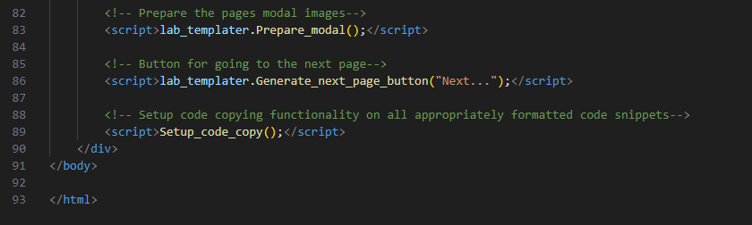

Here we briefly describe the necessary process of editting the files in the template.
1.1 Edits applicable to js/lab-templater.js
The lab template is powered by both CSS and JS - though automation is placed where possible, some manual edits are required.
The most important ones are the "title" and "page list" strings in the js/lab-templater.js file.
When creating a lab, each section is split into a seperate HTML page. To perform automatic generation of the side navigation
menu you must list the file names and corresponding page titles in the js/lab-templater.js file.
Each array entry comes in pairs, 0-1, 2-3, 4-5 ... and so on. The first entry is the file name, the second is the arbitrary
title to be displayed in the navigation menu. Below is an example of populating this:
Note how on the last entry there is no comma.
Finally fill in the title of the lab, like so:

1.2 Edits Applicable to all HTML
Each HTML page should be given a title also which is near the top of the files in the template, like so:
1.3 Do Not Touch
Each HTML page contains header and footer data which forms part of the automation of the templating.
Below I will list the lines and their function, so the author can determine whether they are needed or not.
Specifies character encoding.<meta charset="utf-8">
Supports different viewports.<meta name="viewport" content="width=device-width, initial-scale=1.0">
Specifies the CSS template to use.<link href="css/renesas_layout_style.css" rel="stylesheet" type="text/css">
Specifies the JS templating script to use.<script type="text/javascript" src="js/lab-templater.js"></script>
Specifies the syntax highlighting stylesheet for code snippets.<link rel="stylesheet" href="js/highlight/styles/atom-one-light.min.css">
Specifies the syntax highlighting javascript for code snippets.<script type="text/javascript" src="js/highlight/highlight.min.js"></script>
Function to scan document and perform syntax highlighting where applicable.<script>hljs.highlightAll();</script>
Function to generate templated banner (with side navigation menu).<script>lab_templater.Generate_header();</script>
Calls the templater function to scan the document and apply the modal thumbnails class to specified images.<script>lab_templater.Prepare_modal();</script>
Calls the templater function to generate the next page button with button text specified in argument.<script>lab_templater.Generate_next_page_button("Next...");</script>
Calls the templater function to enable and place code copying buttons in code snippets where applicable.<script>Setup_code_copy();</script>
These are at the top and bottom of the document respectively:
